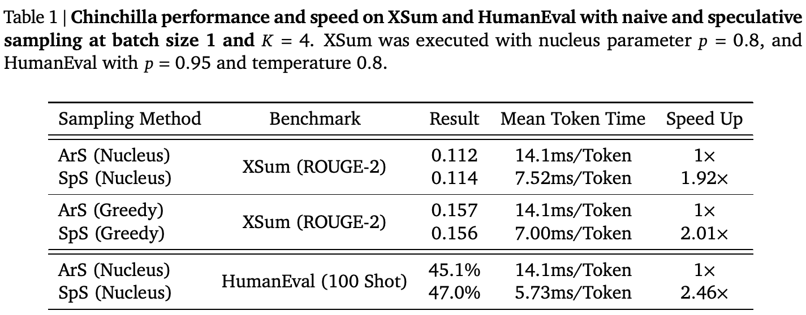
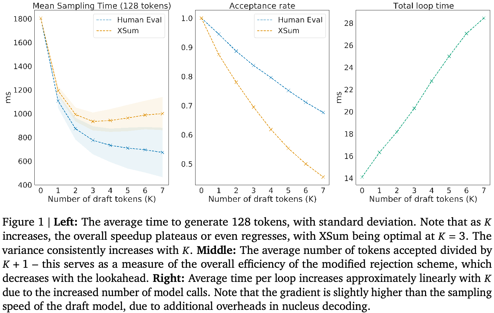
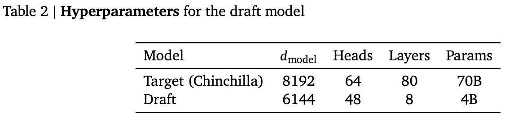

2023-2-3
通过 Speculative Sampling 加速大语言模型 decoding
Charlie Chen1、Sebastian Borgeaud1、Geoffrey Irving1、Jean-Baptiste Lespiau1、Laurent Sifre1 和 John Jumper1
1所有作者均来自 DeepMind
我们提出 speculative sampling，这是一种加速 transformer decoding 的算法，使每次 transformer 调用能够生成多个 token。该算法基于如下观察：对速度更快但能力较弱的草稿模型生成的短续写进行并行评分，其延迟与从更大的目标模型中采样一个 token 相当。我们将这一点与一种新颖的改进拒绝采样方案结合，在硬件数值精度范围内保持目标模型的分布。我们使用拥有 700 亿参数的语言模型 Chinchilla 对 speculative sampling 进行基准测试，在分布式设置下实现 2–2.5 倍的 decoding 加速，同时不损害样本质量，也不对模型本身作任何修改。
引言
将 transformer 模型扩展到 500B 以上参数，使许多自然语言、计算机视觉和强化学习任务的性能大幅提升（Arnab et al., 2021; Brown et al., 2020; Chowdhery et al., 2022; Dosovitskiy et al., 2020; Hoffmann et al., 2022; Rae et al., 2021）。然而，在这一规模下，transformer decoding 仍然是一个成本高昂且效率低下的过程。
Transformer 采样通常受内存带宽限制（Shazeer, 2019），因此，对一组给定的硬件，transformer 模型生成一个 token 所需的时间，在一阶近似下与参数规模及 transformer 内存大小成正比。语言模型的规模也使得服务时必须采用模型并行，这会增加通信开销（Pope et al., 2022），并使资源需求成倍增加。由于每个新 token 都依赖过去的 token，采样一条新序列需要多次这样的 transformer 调用。
我们提出一种面向延迟敏感应用的 transformer 采样加速算法，称为 speculative sampling（SpS）。其实现方式如下：
- 生成一段长度为 \(K\) 的短草稿。这既可通过并行模型（Stern et al., 2018）实现，也可调用一个更快的自回归模型 \(K\) 次。我们将这个模型称为草稿模型，并重点研究它为自回归模型的情形。
- 使用我们希望从中采样的、更大且能力更强的模型对草稿评分。我们将这个模型称为目标模型。
- 采用改进的拒绝采样方案，从左到右接受 \(K\) 个草稿 token 的一个子集，并在此过程中恢复目标模型的分布。
直观而言，序列中的下一个 token 往往可能是“显而易见”的。因此，如果草稿模型与目标模型对给定 token 或 token 子序列的分布高度一致，这种设置就允许每次调用目标模型时生成多个 token。
我们表明，草稿 token 的期望接受率足以抵消大型语言模型的草稿生成过程所带来的开销（接下页）。
通信作者：ccharlie@deepmind.com
© 2023 DeepMind。保留所有权利。
（接上页）由此得到一种有效且实用的采样延迟降低方法，无需修改目标模型，也不会使样本分布产生偏差。视评估领域而定，使用 SpS 从 Chinchilla（Hoffmann et al., 2022）中采样可获得 2–2.5 倍加速。值得注意的是，SpS 的平均每秒 token 数经常超过内存带宽对自回归采样速度施加的理想上限。
相关工作
已有大量工作致力于降低大型 transformer 及其他自回归模型的采样延迟。
由于采样性能与模型在内存中的大小紧密相关，将 transformer 量化到 int8 甚至 int4（Dettmers et al., 2022; Yao et al., 2022），以及对其进行蒸馏（Jiao et al., 2020; Sanh et al., 2019），都是有效降低采样延迟的技术，且性能损失很小甚至没有损失。模型规模对最终性能的贡献小于预期这一观察（Hoffmann et al., 2022），总体上也鼓励了更小语言模型的使用。
在采样期间，每个 attention 层都维护 key 和 value 的缓存；随着 batch 大小增加，它可能成为内存带宽瓶颈。Multi-query attention（Shazeer, 2019）等方法旨在通过缩小这一缓存来改善采样性能。然而，这些技术最有效的用途是在较大 batch 下最大化吞吐量，而非降低延迟；对更大的模型尤其如此，因为其中大部分内存带宽预算由参数消耗。
Pope et al.（2022）结合上述技术及多项 TPU 底层优化，大幅改善了 PaLM 540B 的服务延迟和效率。
已有一批类似工作利用 transformer 和序列模型并行运行的效率，包括分块并行采样（Stern et al., 2018）、激进 decoding（Ge et al., 2022），以及图像领域中将自回归模型并行化的一些工作（Song et al., 2021; Wiggers and Hoogeboom, 2020）。这些方法尚未适配典型的语言模型用例，因为它们要么仅适用于贪心采样，要么使结果产生偏差，要么聚焦于其他模态。此外，据我们所知，这些技术都尚未扩展到分布式设置；而对拥有数百亿或数千亿参数、成本最高的 decoder，分布式设置是必要的。
巧合的是，本文工作与 Leviathan et al.（2022）的 speculative decoding 工作同期独立开展。我们更侧重大型模型的分布式服务场景，并提供一些增量优化，但除此之外，核心思想相同。
自回归采样
尽管 transformer 可以在 TPU 和 GPU 上高效并行训练，样本通常仍以自回归方式抽取（见算法 1）。在大多数应用中，自回归采样（ArS）高度受内存带宽限制，因此无法有效利用现代加速器硬件（Shazeer, 2019）。受内存限制的模型调用对 batch 中的每条序列只生成一个 token，所以生成多个 token 会为任何使用它的系统带来很大的延迟。
随着模型参数量增大，这个问题尤为严重。由于所有模型参数都需要经过至少一块加速器芯片，模型大小除以全部芯片的总内存带宽，就给出了自回归采样最大速度的硬性上限。更大的模型还需要在多个加速器上提供服务，设备间的通信开销又引入了额外延迟。
算法 1 使用自回归模型进行自回归采样（ArS）
给定自回归目标模型 \(q(\cdot\mid\cdot)\)、初始提示序列 \(x_1,\ldots,x_t\) 和目标序列长度 \(T\)。初始化 \(n\leftarrow t\)。当 \(n<T\) 时，采样 \(x_{n+1}\sim q(x\mid x_1,\ldots,x_n)\)，然后令 \(n\leftarrow n+1\)。循环结束。
算法 2 使用自回归目标模型和草稿模型进行 Speculative Sampling（SpS）
给定前瞻长度 \(K\) 和最小目标序列长度 \(T\)。给定自回归目标模型 \(q(\cdot\mid\cdot)\)、自回归草稿模型 \(p(\cdot\mid\cdot)\) 以及初始提示序列 \(x_0,\ldots,x_t\)。初始化 \(n\leftarrow t\)。
- 当 \(n<T\) 时，执行以下过程。
- 对 \(t=1,\ldots,K\)，自回归采样草稿 \(\tilde{x}_t\sim p(x\mid x_1,\ldots,x_n,\tilde{x}_1,\ldots,\tilde{x}_{t-1})\)。
- 根据草稿 \(\tilde{x}_1,\ldots,\tilde{x}_K\)，并行计算 \(K+1\) 组 logits：\[q(x\mid x_1,\ldots,x_n),\ q(x\mid x_1,\ldots,x_n,\tilde{x}_1),\ \ldots,\ q(x\mid x_1,\ldots,x_n,\tilde{x}_1,\ldots,\tilde{x}_K).\]
- 对 \(t=1,\ldots,K\)，从均匀分布采样 \(r\sim U[0,1]\)。如果 \[r<\min\left(1,\frac{q(x\mid x_1,\ldots,x_{n+t-1})}{p(x\mid x_1,\ldots,x_{n+t-1})}\right),\]则令 \(x_{n+t}\leftarrow\tilde{x}_t\)，并令 \(n\leftarrow n+1\)。否则，采样 \[x_{n+t}\sim\big(q(x\mid x_1,\ldots,x_{n+t-1})-p(x\mid x_1,\ldots,x_{n+t-1})\big)_+,\]并退出该 for 循环。
- 如果所有 token \(x_{n+1},\ldots,x_{n+K}\) 均被接受，则额外采样一个 token \(x_{n+K+1}\sim q(x\mid x_1,\ldots,x_n,\ldots,x_{n+K})\)，并令 \(n\leftarrow n+1\)。继续 while 循环。
Speculative Sampling
条件评分
对于 speculative sampling（见算法 2），我们首先观察到，并行计算一段含 \(K\) 个 token 的短续写的 logits，其延迟与采样单个 token 非常接近（接下页）。
（接上页）我们重点研究按 Megatron 方式分片的大型 transformer（Shoeybi et al., 2019）。对这些模型，采样时间大部分可归因于三个组成部分：
- 线性层：batch 较小时，每个线性层只处理少量 embeddings。这使前馈层、query/key/value 计算以及最终 attention 投影中的稠密矩阵乘法受内存限制。对于较小的 \(K\)，这一过程仍受内存限制，因此耗时相近。
- Attention 机制：attention 机制也受内存限制。采样时，我们缓存序列中先前 token 的所有 key 和 value，以避免重新计算。这些 KV cache 很大，占据 attention 机制的大部分内存带宽用量。然而，增加 \(K\) 并不会改变 KV cache 大小，所以这一部分几乎没有时间差异。
- All-reduce：随着模型规模增大，参数必须分布到多个加速器上，从而带来通信开销。在 Megatron 中，这表现为每个前馈层和 attention 层之后的一次 all-reduce。由于仅传输少量 token 的激活，在采样和评分两种情况下（\(K\) 较小时），这一操作通常受延迟而非吞吐量限制。因此，两种情况的耗时依然相近。
具体的 transformer 实现还可能存在其他开销来源。因此，位置编码、decoding 方法的选择（例如，核采样可能需要排序）、硬件限制等，仍可能使评分与采样之间出现一些差异。不过，只要满足上述组成部分占主导的条件，对于较小的 \(K\)，评分就不应明显更慢。
改进的拒绝采样
我们需要一种方法，根据来自草稿模型的样本，以及两个模型对这些 token 给出的 logits，恢复目标模型的分布。
为此，我们引入如下针对草稿 token 的拒绝采样方案。给定 token 序列 \(x_1,\ldots,x_n\)，以及由 \(p(\cdot\mid\cdot)\) 生成的 \(K\) 个草稿 token \(\tilde{x}_{n+1},\ldots,\tilde{x}_{n+K}\)，我们以如下概率接受 \(\tilde{x}_{n+1}\)：
\[\min\left(1,\frac{q(\tilde{x}_{n+1}\mid x_1,\ldots,x_n)}{p(\tilde{x}_{n+1}\mid x_1,\ldots,x_n)}\right).\]其中，\(q(\tilde{x}_{n+1}\mid x_1,\ldots,x_n)\) 和 \(p(\tilde{x}_{n+1}\mid x_1,\ldots,x_n)\) 分别是在截至当前的上下文条件下，目标模型和草稿模型赋予 \(\tilde{x}_{n+1}\) 的概率。
如果该 token 被接受，则令 \(x_{n+1}\leftarrow\tilde{x}_{n+1}\)，并对 \(\tilde{x}_{n+2}\) 重复这个过程，直到某个 token 被拒绝，或所有 token 都被接受。
如果 \(\tilde{x}_{n+1}\) 被拒绝，则从以下分布重新采样 \(x_{n+1}\)：
\[x_{n+1}\sim\big(q(x\mid x_1,\ldots,x_n)-p(x\mid x_1,\ldots,x_n)\big)_+.\]其中 \((\cdot)_+\) 表示：
\[(f(x))_+=\frac{\max(0,f(x))}{\sum_x\max(0,f(x))}.\]依次应用这个过程，我们便能在硬件数值精度范围内，为接受的 token 恢复目标模型的分布（证明见定理 1）。请注意（接下页）：
- 一次“生成草稿—接受”循环总会生成至少一个 token：如果第一个 token 被拒绝，就重新采样一个有效 token。
- 由于草稿的最后一个 token 会给出下一个 token 的 logits，如果全部草稿 token 都被接受，就能正常从这些 logits 采样。因此，每轮最多可以得到 \(K+1\) 个 token，而朴素实现只会返回 \(K\) 个。
对于核采样、top-k 采样及温度调整等标准采样方法，我们可以先相应调整概率，再应用这一拒绝采样方案。我们观察到，总体接受率对所用具体参数具有稳健性。
由于我们不干预 transformer 主体，这种方法可以与许多其他加速采样或优化采样内存使用的技术结合，例如量化和 multi-query attention。
草稿模型的选择
由于接受准则保证了样本遵循目标模型的分布，只要续写生成方法能够提供 logits，且接受率足够高和／或延迟足够低，能够抵消额外开销，我们就可以自由选择草稿方法。这里有几种方案：
- 将草稿生成融入目标模型，并从一开始训练该模型。Stern et al.（2018）采用了这一策略，在 transformer 中加入多个预测头来生成多个 token。
- 使用序列级蒸馏（Kim and Rush, 2016），生成一个并行预测 \(K\) 个 token 的第二模型。Ge et al.（2022）采用了这一策略。
- 将目标模型的一部分激活作为草稿模型的输入，并使用该输入训练草稿模型。
这些方法虽然可能产生能力很强的草稿，但需要大量由目标模型生成的数据，或需要修改目标模型。尤其是序列级蒸馏，需要很大的计算预算。这降低了它们在大规模应用中的实用性。
尽管大型语言模型生成的样本更好，但直观而言，有些 token “更容易”预测，对它们来说，较小模型可能已经足够。因此，我们可以直接使用目标语言模型的较小版本作为草稿模型，并获得较高接受率。从工程和工作流程角度看，这也很方便，因为最初训练目标模型时，就应该已经具备适用于此类模型的可靠工具。
结果
我们在 16 块 TPU v4 上训练了一个针对采样延迟优化的、拥有 40 亿参数的草稿模型。这与通常用于研究用途下 Chinchilla 服务的硬件相同。该模型使用与 Chinchilla 相同的 tokenizer 和数据集训练，宽度稍小，且只有 8 层。层数相对较少使其达到 1.8 ms/token 的采样速度，而 Chinchilla 为 14.1 ms/token。详细信息请参阅表 2 中的超参数。
对于分布式设置，仅仅朴素地选择一个小模型作为草稿是不够的，因为不同模型有不同的最优推理设置。例如，通常使用 16 块 TPU v4 为 Chinchilla 70B 提供服务（接下页）。

（接上页）Chinchilla 70B 在这一设置下达到前述 14.1 ms/token；而按 Chinchilla 计算最优方式训练的 7B 模型，其最低采样延迟出现在 4 块 TPU v4 上，为 5 ms/token。对较小模型，额外内存带宽和 FLOPs 不足以抵消更多设备之间增加的通信开销：在 16 块 TPU 上服务 7B 模型实际上会增加延迟。这意味着，即使采用其最优拓扑，将 7B 用作草稿模型也只能提供有限加速，而且在草稿生成期间无法充分利用硬件。
我们可以通过训练更宽、但层数较少的模型来尽量降低通信开销，从而绕过这个问题。已有观察表明，语言模型的性能对模型深宽比的变化相对稳健（Levine et al., 2020），因此，我们可以部署一个能力较强的草稿模型，在与目标模型相同的硬件上快速采样。
在 XSum 和 HumanEval 上的评估
我们使用 Chinchilla，在两项任务上评估 speculative sampling，并将结果汇总于表 1：
- XSum 基准（Narayan et al., 2018）。这是一个自然语言摘要任务，使用 1-shot 提示，共采样 11,305 条序列，最大序列长度为 128。
- 100-shot HumanEval 任务（Chen et al., 2021）。这是一个代码生成任务，需要生成 16,400 个样本，最大序列长度为 512。
即便使用贪心采样，单个 token 因数值计算产生的偏差也可能使两条序列大幅分歧。由于 ArS 与 SpS 处理伪随机种子的方式不同，而且不同计算图会导致不同的数值结果，我们不能期待完全相同的输出。不过，我们预期样本在数值精度范围内来自相同分布，并通过评估这些基准进行实证验证。
我们以 batch 大小 1，分别使用 SpS 和 ArS 运行任务。每次 SpS／ArS 循环耗时的方差较低，可以直接从 TPU 性能分析记录中测量。为得到平均加速比、标准差及其他指标，我们记录每轮 speculative 循环生成的 token 数量。表 1 展示了 Chinchilla 使用朴素采样与 speculative sampling 时，在 XSum 和 HumanEval 基准上的性能。
我们在两项任务上都取得了显著加速，HumanEval 的加速比接近 2.5 倍。同时，基准指标保持相当：可以证明，底层样本分布在数值精度范围内相同，这也从实验上验证了草稿模型没有使结果产生偏差。对于 HumanEval 和采用贪心采样的 XSum，这种速度超过了硬件对自回归采样施加的理论内存带宽极限，即模型大小除以总内存带宽所对应的极限。
接受率随领域变化
接受率显然取决于应用和 decoding 方法。HumanEval 获得了明显更高的加速比。我们推测，这由多个因素共同导致：代码包含许多常见子序列（例如 for i in range(len(arr)): 对草稿模型而言相对容易猜中）；代码往往被分解为种类更少、长度更短的 token；以及温度值使草稿和目标 logits 的分布都变得更尖锐。

更长草稿与更频繁评分之间的权衡
图 1 展示了增加草稿模型所采样 token 数 \(K\) 所带来的权衡。随着 \(K\) 增大，生成相同长度序列所需的大模型评分调用减少，因而可能获得更高加速比。然而，随着草稿模型调用次数增多，以及评分时间小幅上升，总循环耗时近似线性增加。随着 \(K\) 增大，接受 token 占比所反映的整体效率会下降，因为后续 token 依赖先前 token 被接受。因此，视领域而定，较大的 \(K\) 会使平均加速比趋于平缓，甚至下降；例如，采用核采样的 XSum 在 \(K=3\) 时延迟最低。
此外，即便更大的 \(K\) 在某些情况下可能略微提高平均加速比，它也会增大生成完整序列所需时间的方差。对关注 P90、P99 延迟的场景，这可能成为问题。
结论
本文展示了一种加速语言模型 decoding 的新算法和工作流程。Speculative sampling 不需要对目标语言模型的参数或架构作任何修改，可以证明其在数值精度范围内无损，配合适当的草稿模型能够良好扩展，并且与许多现有的、小 batch 场景下降低延迟的技术互补。
我们使用一个易于通过现有基础设施训练的草稿模型，对该技术进行优化并扩展到 Chinchilla 70B，展示了它在各项基准任务与常见 decoding 方法中均能带来显著加速。我们通过下游任务的实验验证了它确实无损。
参考文献
A.Arnab, M.Dehghani, G.Heigold, C.Sun, M.Lucic, andC.Schmid. ViViT：视频视觉 transformer。 In 2021 IEEE/CVF International Conference on Computer Vision (ICCV), pages 6816–6826. IEEE Computer Society, 2021.
T. Brown, B. Mann, N. Ryder, M. Subbiah, J. D. Kaplan, P. Dhariwal, A. Neelakantan, P. Shyam,
G. Sastry, A. Askell, et al. 语言模型是少样本学习器。Advances in neural information processing systems, 33:1877–1901, 2020. M.Chen,J.Tworek,H.Jun,Q.Yuan,H.P.deOliveiraPinto,J.Kaplan,H.Edwards,Y.Burda,N.Joseph, G.Brockman,A.Ray,R.Puri,G.Krueger,M.Petrov,H.Khlaaf,G.Sastry,P.Mishkin,B.Chan,S.Gray,
N. Ryder, M. Pavlov, A. Power, L. Kaiser, M. Bavarian, C. Winter, P. Tillet, F. P. Such, D. Cummings, M.Plappert,F.Chantzis,E.Barnes,A.Herbert-Voss,W.H.Guss,A.Nichol,A.Paino,N.Tezak,J.Tang,
I. Babuschkin, S. Balaji, S. Jain, W. Saunders, C. Hesse, A. N. Carr, J. Leike, J. Achiam, V. Misra,
E. Morikawa, A. Radford, M. Knight, M. Brundage, M. Murati, K. Mayer, P. Welinder, B. McGrew,
D. Amodei, S. McCandlish, I. Sutskever, and W. Zaremba. 评估在代码上训练的大语言模型。CoRR, abs/2107.03374, 2021. URLhttps://arxiv.org/abs/2107.03374.
A. Chowdhery, S. Narang, J. Devlin, M. Bosma, G. Mishra, A. Roberts, P. Barham, H. W. Chung,
C. Sutton, S. Gehrmann, et al. PaLM：利用 Pathways 扩展语言建模。arXiv preprint arXiv:2204.02311, 2022.
T. Dettmers, M. Lewis, Y. Belkada, and L. Zettlemoyer. LLM.int8()：面向大规模 transformer 的 8 位矩阵乘法。arXiv preprint arXiv:2208.07339, 2022.
A. Dosovitskiy, L. Beyer, A. Kolesnikov, D. Weissenborn, X. Zhai, T. Unterthiner, M. Dehghani, M. Min- derer,G.Heigold,S.Gelly,etal. 一幅图像值 16×16 个词：面向大规模图像识别的 transformer。arXiv preprint arXiv:2010.11929, 2020.
T. Ge, H. Xia, X. Sun, S. Chen, and F. Wei. 通过激进 decoding 无损加速 seq2seq 生成。 ArXiv, abs/2205.10350, 2022. 8
J. Hoffmann, S. Borgeaud, A. Mensch, E. Buchatskaya, T. Cai, E. Rutherford, D. d. L. Casas, L. A. Hendricks, J.Welbl, A.Clark, etal. 训练计算最优的大语言模型。 arXivpreprint arXiv:2203.15556, 2022.
X. Jiao, Y. Yin, L. Shang, X. Jiang, X. Chen, L. Li, F. Wang, and Q. Liu. TinyBERT：面向自然语言理解的 BERT 蒸馏。 InFindings of the Association for Computational Linguis- tics: EMNLP 2020, pages 4163–4174, Online, Nov. 2020. Association for Computational Linguis- tics. doi: 10.18653/v1/2020.findings-emnlp.372. URL https://aclanthology.org/2020. findings-emnlp.372.
Y. Kim and A. M. Rush. 序列级知识蒸馏。CoRR, abs/1606.07947, 2016. URL http://arxiv.org/abs/1606.07947.
Y. Leviathan, M. Kalman, and Y. Matias. 通过 speculative decoding 实现 transformer 快速推理。 ArXiv, abs/2211.17192, 2022.
Y. Levine, N. Wies, O. Sharir, H. Bata, and A. Shashua. Self-attention 中深度与宽度的相互作用。 arXiv preprint arXiv:2006.12467, 2020.
S. Narayan, S. B. Cohen, and M. Lapata. 不要给我细节，只要摘要！面向极端摘要的主题感知卷积神经网络。 InProceedings of the 2018 Conference on Empirical Methods in Natural Language Processing, pages 1797–1807, Brussels, Belgium, Oct.-Nov. 2018. Association for Computational Linguistics. doi: 10.18653/v1/D18-1206. URL https://aclanthology.org/D18-1206.
R. Pope, S. Douglas, A. Chowdhery, J. Devlin, J. Bradbury, A. Levskaya, J. Heek, K. Xiao, S. Agrawal, and J. Dean. 高效扩展 transformer 推理。arXiv preprint arXiv:2211.05102, 2022.
J. W. Rae, S. Borgeaud, T. Cai, K. Millican, J. Hoffmann, F. Song, J. Aslanides, S. Henderson, R. Ring,
S. Young, et al. 扩展语言模型：训练 Gopher 的方法、分析与洞见。arXiv preprint arXiv:2112.11446, 2021.
V. Sanh, L. Debut, J. Chaumond, and T. Wolf. DistilBERT，BERT 的蒸馏版本：更小、更快、更便宜、更轻量。arXiv preprint arXiv:1910.01108, 2019.
N. Shazeer. 快速 transformer decoding：只需一个写入头。CoRR, abs/1911.02150, 2019. URL http://arxiv.org/abs/1911.02150.
M. Shoeybi, M. Patwary, R. Puri, P. LeGresley, J. Casper, and B. Catanzaro. Megatron-LM：使用模型并行训练数十亿参数的语言模型。arXiv preprint arXiv:1909.08053, 2019.
Y. Song, C. Meng, R. Liao, and S. Ermon. 通过并行求解非线性方程加速前馈计算。 In M. Meila and T. Zhang, editors,Proceedings of the 38th InternationalConference on Machine Learning, volume 139 ofProceedings of Machine Learning Research, pages 9791–9800. PMLR, 18–24 Jul 2021. URLhttps://proceedings.mlr.press/v139/song21a.html.
M. Stern, N. Shazeer, and J. Uszkoreit. 深度自回归模型的分块并行 decoding。 CoRR, abs/1811.03115, 2018. URLhttp://arxiv.org/abs/1811.03115.
A. Wiggers and E. Hoogeboom. 使用预测型自回归模型进行预测式采样。 In H. D. III and A. Singh, editors,Proceedings of the 37th International Conference on Machine Learning, volume 119 ofProceedings of Machine Learning Research, pages 10260–10269. PMLR, 13–18 Jul 2020. URL https://proceedings.mlr.press/v119/wiggers20a.html.
Z. Yao, R. Y. Aminabadi, M. Zhang, X. Wu, C. Li, and Y. He. ZeroQuant：面向大规模 transformer 的高效且低成本的后训练量化。arXiv preprint arXiv:2206.01861, 2022.
补充材料
作者贡献
- 最初提案：Charlie Chen、John Jumper 和 Geoffrey Irving
- 初始实现、优化与扩展：Charlie Chen
- 改进的拒绝采样方案：John Jumper
- 工程改进：Jean-Baptiste Lespiau 和 Charlie Chen
- 实验：Charlie Chen、Sebastian Borgeaud 和 Laurent Sifre
- 论文初稿：Charlie Chen 和 Sebastian Borgeaud
- 论文反馈：Laurent Sifre、Geoffrey Irving 和 John Jumper
致谢
感谢 Oriol Vinyals 和 Koray Kavukcuoglu 提供的热心建议与领导。我们还感谢 Evan Senter 对稿件提供的额外反馈，以及 Amelia Glaese 在出版流程中给予的支持。最后，感谢 Blake Hechtman 和 Berkin Ilbeyi 就 XLA 提供的宝贵建议，以及 Nikolai Grigoriev 与我们讨论各种可用于 transformer 架构的技巧。
超参数

证明
定理 1（改进的拒绝采样恢复目标分布）。给定离散分布 \(q,p\)，以及单个草稿样本 \(\tilde{x}\sim p\)，令 \(X\) 为最终得到的样本。要使 \(X=x\) 成立，我们必须或者采样到 \(\tilde{x}=x\) 并接受它，或者在 \(\tilde{x}\)（无论其取值如何）被拒绝之后重新采样到它。因此：
\[\begin{aligned}\mathbb P(X=x)={}&\mathbb P(\tilde{x}=x)\mathbb P(\tilde{x}\text{ 被接受}\mid\tilde{x}=x)\\&+\mathbb P(\tilde{x}\text{ 被拒绝})\mathbb P(X=x\mid\tilde{x}\text{ 被拒绝}).\end{aligned}\]对于第一项，应用接受规则：
\[\mathbb P(\tilde{x}=x)\mathbb P(\tilde{x}\text{ 被接受}\mid\tilde{x}=x)=p(x)\min\left(1,\frac{q(x)}{p(x)}\right).\]（接上页公式）
\[=\min(p(x),q(x)).\]对于第二个条件概率项，应用重新采样规则：
\[\mathbb P(X=x\mid\tilde{x}\text{ 被拒绝})=(q(x)-p(x))_+.\]其中 \((\cdot)_+\) 表示：
\[(f(x))_+=\frac{\max(0,f(x))}{\sum_x\max(0,f(x))}.\]最后，计算拒绝概率：
\[\begin{aligned}\mathbb P(\tilde{x}\text{ 被拒绝})&=1-\mathbb P(\tilde{x}\text{ 被接受})\\&=1-\sum_{x'}\mathbb P(X=x',\tilde{x}\text{ 被接受})\\&=1-\sum_{x'}\min(p(x'),q(x'))\\&=\sum_{x'}\max(0,q(x')-p(x'))\\&=\sum_{x'}\big[q(x')-\min(p(x'),q(x'))\big]\\&=\sum_{x'}\max(0,q(x')-p(x')).\end{aligned}\]这等于 \((q(x)-p(x))_+\) 的分母，因此：
\[\mathbb P(\tilde{x}\text{ 被拒绝})\mathbb P(X=x\mid\tilde{x}\text{ 被拒绝})=\max(0,q(x)-p(x)).\]从而：
\[\begin{aligned}\mathbb P(X=x)&=\min(p(x),q(x))+\max(0,q(x)-p(x))\\&=q(x).\end{aligned}\]我们由此恢复了所需的目标分布。